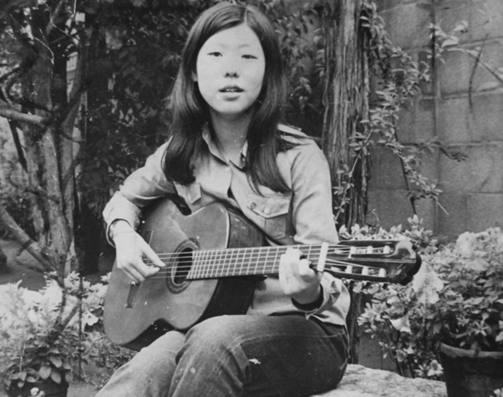
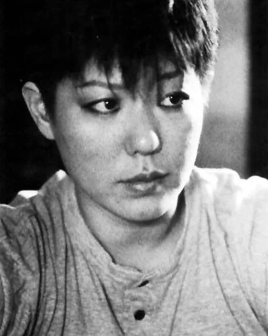
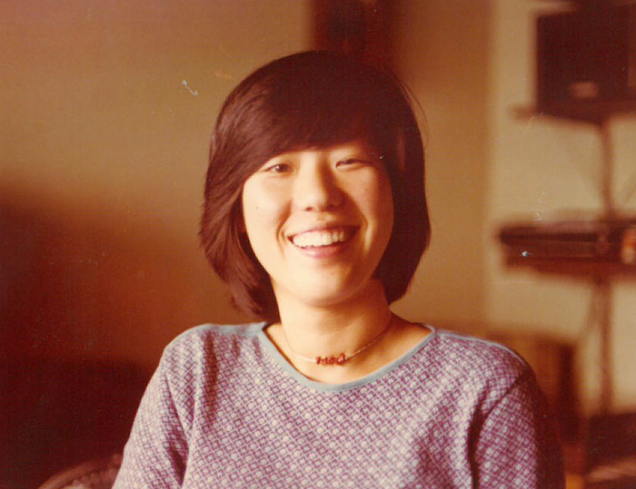
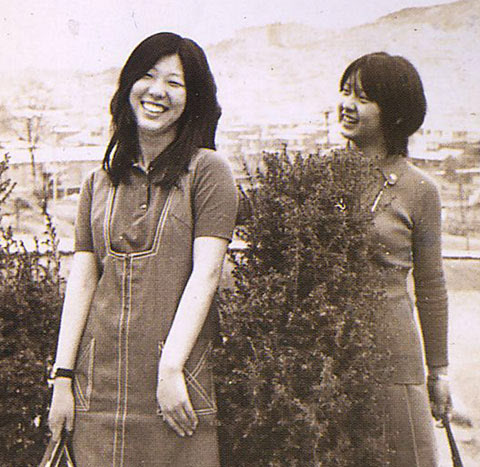
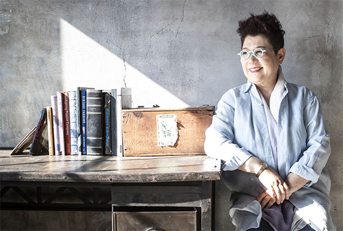

양희은의 시작은 음악이 아니었다.
그녀는 원래 방송국 PD가 되고 싶었던 대학생이었다.
하지만 1971년, ‘아침이슬’을 우연히 부르게 되면서 한국 대중음악의 한 축이 되기 시작했다.
그녀의 목소리는 맑고 단정했다.
하지만 그 안에는 언제나 단단한 의지와 시대를 향한 따뜻한 질문이 담겨 있었다.
그녀가 노래하는 그 꽃은 늘 광장에 피었고, 그려나 말하는 사랑은 언제나 사람을 위한 것이었다.
양희은의 음악은 언제나 ‘개인’을 넘어 ‘우리’를 품었다.
그녀는 군부정권 아래에서 ‘금지곡 가수’가 되었고, 수차례 무대에서 내려와야 했지만,
단 한 번도 자신의 노래를 부끄러워하지 않았다.
오히려 그녀는 더 낮은 자리에서, 더 많은 사람들의 마음에 말을 걸었다.
그녀는 스타가 아닌, 시대의 ‘언니’로 기억된다.
양희은은 단순한 가수가 아니라, 시대를 노래한 목소리였다.
‘아침이슬’은 처음부터 금지곡이 아니었다.
오히려 이 노래는 1970년대 초 대학생들 사이에서
자율과 연대를 상징하는 '새로운 노래'로 자리 잡았다.
그러나 1972년, 유신체제가 시작되면서 상황은 바뀌었다.
“이제 다시 태양은 솟고…”라는 가사는 ‘민중의 각성’을 암시한다는 이유로 문제시되었고,
정권은 이 노래를 불온한 메시지로 규정했다.
결국 ‘아침이슬’은 방송 금지를 넘어 집회와 공연장에서조차 부를 수 없게 되었다.
노래를 부른 가수 양희은 역시 블랙리스트에 오르며 무대에서 밀려났다.
하지만 금지는 곧 기억이 되었고,
기억은 저항이 되었다.
1980년대, 이 노래는 대학가요제의 상징곡으로 부활했고,
수많은 민주화 운동의 현장에서 다시 울려 퍼졌다.
“아침이슬”은 더 이상 단지 한 곡의 노래가 아니라,
검열을 이겨낸 시대의 목소리가 되었다.
그날의 금지는, 오늘의 기억이 되었다.

긴 밤 지새우고 풀잎마다 맺힌
진주보다 더 고운 아침이슬처럼
내 맘에 설움이 알알이 맺힐 때
아침동산에 올라 작은 미소를 배운다
태양은 묘지 위에 붉게 떠오르고
한낮의 찌는 더위는 나의 시련일지라
나 이제 가노라 저 거친 광야에
서러움 모두 버리고 나 이제 가노라
내 맘에 설움이 알알이 맺힐 때
아침 동산에 올라 작은 미소를 배운다
태양은 묘지위에 붉게 떠오르고
한 낮에 찌는 더위는 나에 시련 일지라
나 이제 가노라 저 거친 광야에
서러움 모두 버리고 나 이제 가노라



